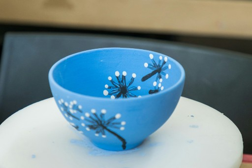

1. Paint Ready-to-Decorate Pottery

Pottery Palette offers a wide range of ready-to-paint pottery pieces for you to explore your creativity. Whether you're designing a functional piece for daily use or a decorative item for your home, we have something for everyone. Our studio provides all the tools, paints, and inspiration you need to bring your vision to life. From bold colors to intricate patterns, you can customize your pottery to match your style.
- Mugs & Cups: Perfect for your morning coffee or tea.
- Plates & Bowls: Make your dining table unique with hand-painted pieces.
- Decorative Figurines: Create colorful animals, seasonal decorations, or custom keepsakes.
- Home Décor Items: Design vases, picture frames, or candleholders to match your style.
Here is a table that inclides our prices.
Pottery Pricing Table
| Pottery Item |
Price |
Painting Fee |
Estimated Completion Time |
| Mug |
$15 |
$10 |
1-2 hours |
| Bowl |
$20 |
$10 |
1-2 hours |
| Plate |
$25 |
$12 |
2 hours |
| Figurine (small) |
$12 |
$8 |
1 hour |
| Figurine (large) |
$25 |
$12 |
1.5-2 hours |
| Vase (large) |
$30 |
$15 |
2-3 hours |
2. Craft Your Own Pottery

Discover the art of pottery-making with our hands-on classes, perfect for all skill levels. Guided by our expert instructor, Christine, you'll learn how to work with clay and bring your ideas to life. From shaping clay on the pottery wheel to adding unique textures and designs, this experience is fun and rewarding. Whether you’re crafting a gift or a keepsake for yourself, every piece will reflect your personal touch, and you’ll learn how to:
- Shape clay into bowls, plates, or vases.
- Add texture, patterns, or personal touches.
- Finish your piece for firing and glazing.
These classes are a great way to relax, unwind, and explore your creative side.
3. Host an Event or Party

Looking to make your next celebration or gathering unforgettable? Pottery Palette offers a creative twist on parties and events, perfect for all ages and occasions. Whether it’s a child’s birthday party filled with colorful figurines, a bridal shower where guests design custom keepsakes, or a team-building event that fosters creativity and collaboration, our studio is the perfect setting. We provide everything you need, including a wide selection of pottery pieces, painting supplies, and a supportive team to guide the process. We host:
- Birthday Parties: Celebrate with friends while painting pottery.
- Team-Building Events: Encourage creativity and collaboration.
- Baby Showers & More: Create keepsakes or group projects for meaningful memories.
4. Seasonal Projects and Workshops

Celebrate the seasons with Pottery Palette’s special workshops and themed projects! These events are perfect for adding a festive touch to your pottery and making memories with friends and family. Whether it’s creating holiday ornaments or springtime décor, our seasonal workshops are fun for all ages.
- Paint personalized holiday ornaments or winter-themed mugs.
- Create spooky Halloween decorations like pumpkin bowls or ghost figurines.
- Design vibrant planters or floral-inspired pottery for spring.